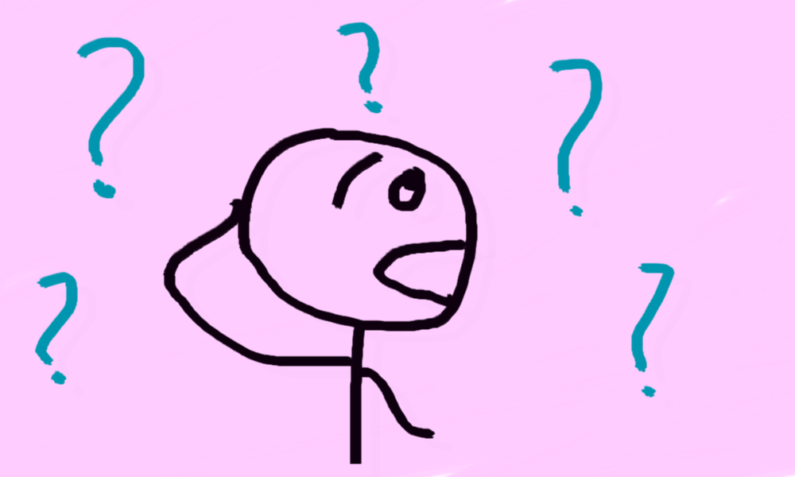
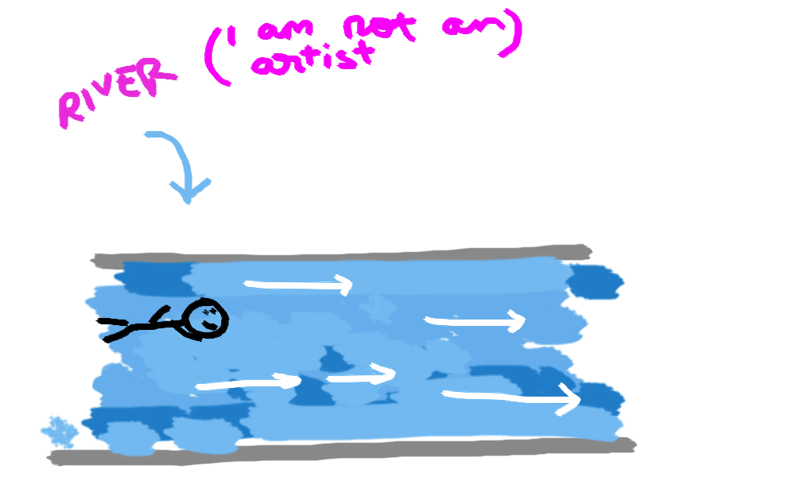
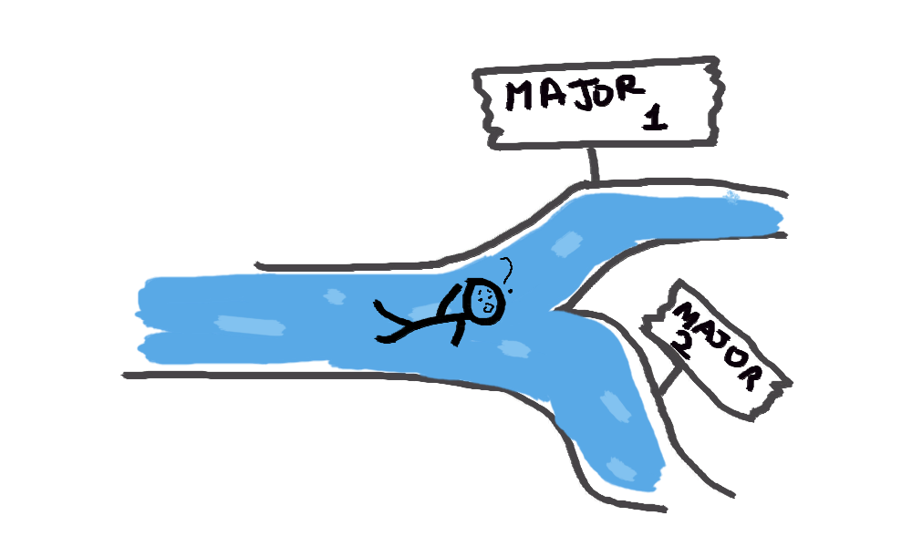
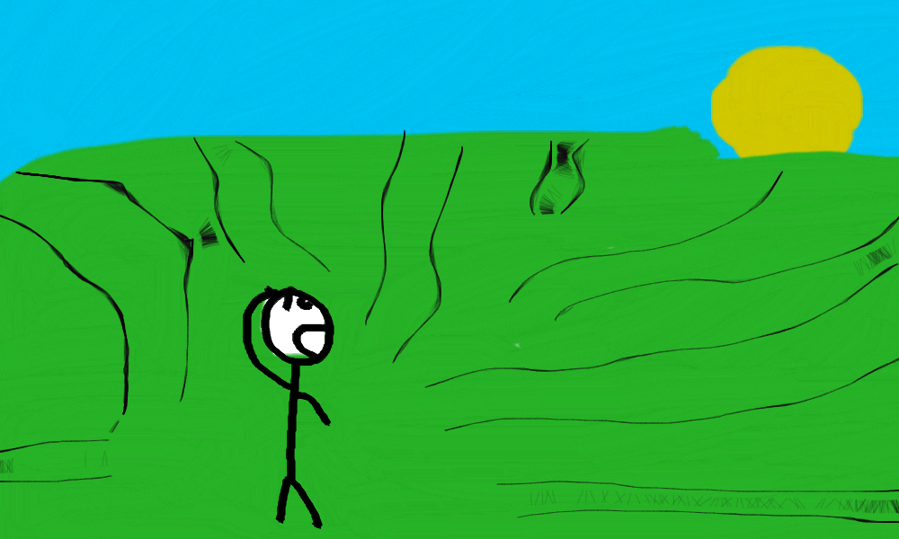

Getting Ready To Start A Career

I recently graduated from a Master’s program. This signals the end of my formal education (for now?)! At this age, most of my friends are also finishing up college and getting ready to enter the workforce. Given this trend of transitioning from formal education into beginning our careers, most of our conversations center around how starting a career is going to be different when compared to formal education. This is a post about what I think the key differences are between the worlds of formal education and career development, and how I plan on changing my approach to stay afloat.
Disclaimer: I’m the least qualified person to be talking about this. This post is entirely speculative and I’m sure things don’t actually work this way. I just wanted to put my thoughts out there.
The way I see it, formal education is like being plopped into a river. You go where the river takes you. This is perfectly fine, because at the age where you enter formal education, you probably are not intelligent enough to make your own decisions. You probably aren’t intelligent enough to tell the difference between a spoonful of food headed your way and an airplane either (if you are a 2 year old who can do this, please contact me).

This isn’t to say that you never get to make your own decisions: every now and then there will be a fork in the river, and you will need to make a decision. Think of situations where you had to decide what you wanted to go to college for, or when you had to declare your major. Although these are decisions you are making, they only lead you into another stream in the river, where you, once again, follow the flow.

The situation so far can be summarised this way: there was always an end goal in mind, (example: getting a degree, scoring an internship, etc) and you followed the flow of a river to get there. The river is the ‘template’ or a set of proven steps you could follow to achieve said goal.
Now that formal education is over, the situation is different. It’s as if the river has led me out to a massive open field. There is no real flow, I can go where I want, I can do what I like, and I have the power to make all my decisions.

I am not used to being in such a situation, and I’m beginning to realise that I now have to think critically about how I will approach this open field. In order to do this, I first need to understand the key differences between this situation and a go with the flow situation I was in until a month ago.
So, how is this situation different?
1. This is a long-haul thing
Formal education lasts around 21-22 years, but is actually broken down into many 4-5 year blocks (primary school, high school, college). It’s a structured system. A career path, on the other hand, is (on average) a ~30 year stretch. The key takeaway here is that your ‘end goal’ will keep changing and shifting. Maybe after a year of being a mechanical engineer you realise that you enjoy management. Your goalposts will keep changing as you change, and as you learn more about yourself and the industry you’re in.
2. You are in full control
Outside of ensuring your financial security, you now have very few obligations. You can choose to switch careers, you can choose to turn down a promotion, you could even choose to start your own company. The possibilities are endless, and this seems like an overwhelming amount of control,
Those are… major differences. How do I change my approach to deal with these characteristics?
Starting with the fact that this is a long-haul situation, I have 2 thoughts.
First, given that the end goal isn’t going to be fixed, it might be a good idea to switch from a goal-oriented mindset to a behavior-oriented one. Here’s what that means: there is nothing wrong in setting a goal of scoring a promotion, but maybe after 6 months at the job I may realise that I simply do not want to continue working in the current team. Instead, setting the intention of learning as much as possible from the people and industry around me makes much more sense. A few months down the line, I will gain skills, experience, and I will be in a much better position to set a goal.
Secondly, it’s probably a good idea to get comfortable with uncertainty. As I start a job, I know very little about the industry, the work, and whether I will enjoy it. I don’t want to be making any decisions at this stage. It makes much more sense to wait, get some more intel, and make decisions further down the line.
Next, the overwhelming amount of control. Yeesh. You can walk wherever you want in the open field that is career development. You can lock yourself into a job and rise up the ladder, you could sample many things and decide what you enjoy best, you could say ‘to hell with it’ and start your own venture. Having so much control and zero ‘default flow’ means it’s really important to be intentional. The field is huge, and you want to know why you are heading in a certain direction rather than wander around aimlessly.
I also want to experiment. When I first joined Cornell, I came in with the intention of studying Embedded Systems. I thought I knew exactly what I wanted and I didn’t think I could enjoy anything more. I was (wait for it) wrong. I ended up taking a couple of courses in computer architecture that completely changed my mind. Embedded Systems never stood a chance. Point being, you don’t know what you really want until you’ve tried several things. Career development is a long road, and I do not wish to tie myself down until I’ve had the chance to experiment with options.
The idea is to try something, get feedback (from yourself and people around you), adjust course, and try again. The biggest thing I will do now is ask for advice. From friends who have been in this situation before, from people I will have the chance to work with, and of course, from my parents.
So, where does this leave us?
I’d like to state again that this is purely speculative. I have no idea what I’m talking about, and these are just thoughts. I will be taking my own advice on learning and getting constant feedback and changing how I perceive career development and my approach. This is just my initial mindset as I start my career, and things will change, but in my opinion, this is a good way to begin.
Let me know if you think this sounds familiar to you or if you think things are different (I am 100% sure that they are). Do you think I am over simplifying/over complicating the situation? I certainly think I am. Let me know!
This post is inspired by Tim Urban’s post about career paths.